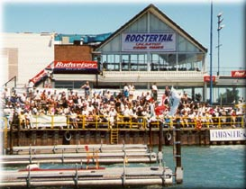
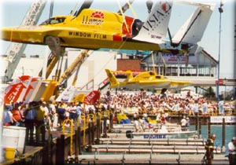
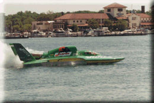

|
Hot Pit Corner is one of our most exciting passes, located just feet from the edge of the Detroit River. There is a great view of the course, the Roostertail Turn, and the pit action from here. These are photos of the Hot Pit Corner bleachers, taken from the opposite end of the pits.
  (Photos copyright 2000 Joe Dabliz)
 (Photo anonymous)
All contents Copyright © 1997-2000 Spirit of Detroit THUNDERFEST, except where noted.
Web page created by Brian Reed.
|